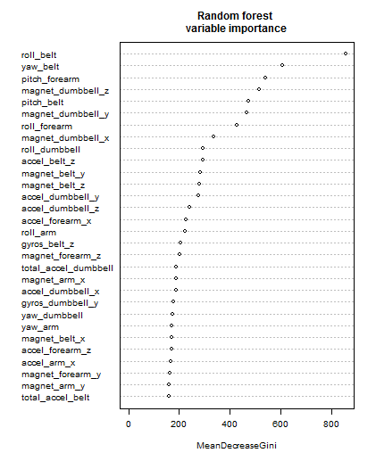
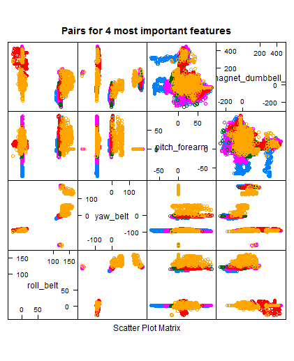

Practical Machine Learning
Prediction Assignment Writeup
Data sets
The Data sets were loaded with read.csv() function. Both "NA" and "" (empty) strigns were treates as NA.
test_set = read.csv("pml-testing.csv")
training_set = read.csv("pml-training.csv", na.strings = c("NA", "") )
There are lot of variables with NA or empty values. I believe the imputing will not improve fit because number of missing values is too large (more than 95%) for some variables, that is we have no enough data representation for these variables. These columns were removed with following code:
# remove columns with number of NA's more than NA_rate
remove_NA_Columns <- function(x, NA_rate){
NA_cols_del = data.frame(colSums(is.na(x))) / nrow(x) > NA_rate
x[,which(!NA_cols_del)]
}
training_set = remove_NA_Columns(training_set, 0.9)
test_set = remove_NA_Columns(test_set, 0.9)
Data analysis
Columns in the both data sets belongs to three types:
- Numerous sensor's readings
- Classification-related column:
- "classe" for training set
- "problem_id" for test set
- Service columns:
- "X" - essentially row index
- "user_name" - user name
- "raw_timestamp_part_1" and "raw_timestamp_part_2" - row timestamp
- "cvtd_timestamp" - more readable for of timestamp
- "new_window" and "num_window" - semantics unknown
The new_window variable is categorical with only two levels while one level overwhelms over another (98%).
I decided to use only sensor's readings as relevant to the prediction task. Other columns were removed with following code:
removeColumns <- function(x, columns){
x = x[,setdiff(names(x), columns)]
}
cols_to_del = c("X", "user_name",
"raw_timestamp_part_1", "raw_timestamp_part_2",
"cvtd_timestamp",
"new_window",
"num_window")
training_set = removeColumns(training_set, cols_to_del)
test_set = removeColumns(test_set, cols_to_del)
Variance analysis with PCA:
svd1 <- svd(scale(training[,-ncol(training)]))
plot(svd1$d^2/sum(svd1$d^2), pch = 19, xlab = "Singular vector", ylab = "Variance explained")

Training and validation sets
The remaining training_set was splitted to training and validation sets using caret package:
library(caret)
inTrain <- createDataPartition(y=training_set$classe,p=0.7, list=FALSE)
training <- training_set[inTrain,]
testing <- training_set[-inTrain,]
dim(training); dim(testing)
Fit model with Random Forest
Actually for Random Forest method there is no need for separate cross-validation or test set to get an unbiased estimate of the test set error, but I decided to use additional test set for sanity check.
library(randomForest)
set.seed(8484)
# train
modFit <- randomForest(classe~ ., data=training)
# Predicting new values
pred = predict(modFit,newdata=testing)
confusionMatrix(pred, testing$classe)
Train process with default parameters takes about 30 sec. Model shows out-of-bag error estimation =0.48% :
Call:
randomForest(formula = classe ~ ., data = training)
Type of random forest: classification
Number of trees: 500
No. of variables tried at each split: 7
OOB estimate of error rate: 0.48%
Confusion matrix:
A B C D E class.error
A 3902 1 2 0 1 0.001024066
B 13 2638 7 0 0 0.007524454
C 0 10 2383 3 0 0.005425710
D 0 0 22 2230 0 0.009769094
E 0 1 2 4 2518 0.002772277
Printed statistics shows accuracy with testing set =0.9986 :
Confusion Matrix and Statistics
Reference
Prediction A B C D E
A 1673 0 0 0 0
B 1 1138 2 0 0
C 0 1 1024 2 0
D 0 0 0 960 0
E 0 0 0 2 1082
Overall Statistics
Accuracy : 0.9986
95% CI : (0.9973, 0.9994)
No Information Rate : 0.2845
P-Value [Acc > NIR] : < 2.2e-16
Kappa : 0.9983
The RF Error Rates:
plot(modFit, log="y", main="Random forest error rates")
legend("topright", colnames(modFit$err.rate),col=1:5,fill=1:5)

Features analysis:
# Get variable importance and sort more important first
vimp = varImp(modFit)
vimp_order = order(vimp, decreasing = TRUE)
vimp_sorted = as.data.frame(vimp[vimp_order,], row.names=row.names(vimp)[vimp_order])
names(vimp_sorted) = names(vimp)
> head(vimp_sorted, 10)
row.names Overall
roll_belt 854.6597
yaw_belt 607.1912
pitch_forearm 538.0936
magnet_dumbbell_z 516.4016
pitch_belt 473.0256
magnet_dumbbell_y 466.5814
roll_forearm 428.6566
magnet_dumbbell_x 334.5113
roll_dumbbell 293.6822
accel_belt_z 293.6580
# Dotchart of variable importance as measured by a Random Forest
varImpPlot(modFit, cex=0.6, main="Random forest \nvariable importance")

Plots for first 4 important variables show rather discriminative projections of clusters on these variables:
featurePlot(x=testing[, vimp_order[1:4]], y=testing$classe, plot="pairs", main="Pairs for 4 most important features")

Attempt to fit model using only first 7 most important variables gives decent results:
OOB estimate of error rate: 1.53%
Accuracy : 0.9869
Prediction using both all sensor's variables and only four most important give same result on testing set pml-training.csv:
(pred_tst = predict(modFit,newdata=test_set))
1 2 3 4 5 6 7 8 9 10 11 12 13 14 15 16 17 18 19 20
B A B A A E D B A A B C B A E E A B B B